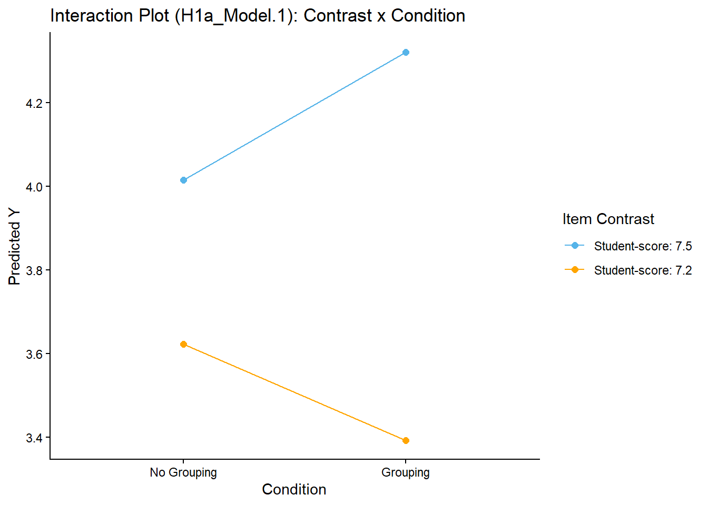
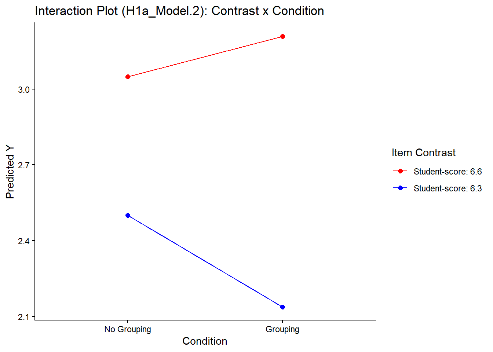

Simulation - Test Analysis
Last compiled on januari-12-2026
Load libraries
## Warning: package 'pacman' was built under R version 4.4.3Load data
Model type 1) Mixed Models
H1a & H1b) Smartness
# ---- Smartness comparison 7.8 & 7.5 ----
model_list.C[["H1a_Model.1"]] <- nlme::lme(
fixed = Y ~ Condition * Contrast,
random = ~ 1 | Subject,
data = df_S_1,
method = "ML"
)
H1a_Model.1 <- lmerTest::lmer(
Y ~ Condition * Contrast + (1 | Subject),
data = df_S_1,
REML = FALSE
)## boundary (singular) fit: see help('isSingular')# ---- Smartness comparison 6.6 & 6.3 ----
model_list.C[["H1a_Model.2"]] <- nlme::lme(
fixed = Y ~ Condition * Contrast,
random = ~ 1 | Subject,
data = df_S_2,
method = "ML"
)
# ---- Smartness comparison 7.5 & 6.6 ----
model_list.C[["H1b_Model.1"]] <- nlme::lme(
fixed = Y ~ Condition * Contrast,
random = ~ 1 | Subject,
data = df_S_3,
method = "ML"
)Checks for significance calculation
tab_model(model_list.C[str_detect(names(model_list.C), "H1")],
dv.labels = names(model_list.C[str_detect(names(model_list.C), "H1")]))| H1a_Model.1 | H1a_Model.2 | H1b_Model.1 | |||||||
|---|---|---|---|---|---|---|---|---|---|
| Predictors | Estimates | CI | p | Estimates | CI | p | Estimates | CI | p |
| (Intercept) | 3.84 | 3.77 – 3.90 | <0.001 | 2.72 | 2.66 – 2.79 | <0.001 | 3.32 | 3.25 – 3.39 | <0.001 |
| Condition | 0.02 | -0.05 – 0.08 | 0.560 | -0.05 | -0.12 – 0.02 | 0.147 | -0.02 | -0.09 – 0.05 | 0.631 |
| Contrast | 0.33 | 0.27 – 0.39 | <0.001 | 0.41 | 0.34 – 0.47 | <0.001 | 0.19 | 0.12 – 0.26 | <0.001 |
| Condition × Contrast | 0.13 | 0.07 – 0.20 | <0.001 | 0.13 | 0.06 – 0.20 | <0.001 | -0.10 | -0.17 – -0.03 | 0.007 |
| Random Effects | |||||||||
| σ2 | 0.87 | 0.92 | 1.04 | ||||||
| τ00 | 0.00 Subject | 0.02 Subject | 0.00 Subject | ||||||
| ICC | 0.02 | 0.00 | |||||||
| N | 400 Subject | 400 Subject | 400 Subject | ||||||
| Observations | 800 | 800 | 800 | ||||||
| Marginal R2 / Conditional R2 | 0.127 / NA | 0.162 / 0.181 | 0.043 / 0.043 | ||||||
## Linear mixed-effects model fit by maximum likelihood
## Data: df_S_1
## AIC BIC logLik
## 2166.734 2194.842 -1077.367
##
## Random effects:
## Formula: ~1 | Subject
## (Intercept) Residual
## StdDev: 6.755576e-05 0.9303173
##
## Fixed effects: Y ~ Condition * Contrast
## Value Std.Error DF t-value p-value
## (Intercept) 3.837885 0.03298082 398 116.36719 0.0000
## Condition 0.019258 0.03298082 398 0.58391 0.5596
## Contrast 0.330182 0.03298082 398 10.01134 0.0000
## Condition:Contrast 0.134104 0.03298082 398 4.06611 0.0001
## Correlation:
## (Intr) Condtn Cntrst
## Condition 0.02
## Contrast 0.00 0.00
## Condition:Contrast 0.00 0.00 0.02
##
## Standardized Within-Group Residuals:
## Min Q1 Med Q3 Max
## -3.24051377 -0.66917927 -0.01580738 0.72939787 1.72752129
##
## Number of Observations: 800
## Number of Groups: 400## Linear mixed model fit by maximum likelihood . t-tests use Satterthwaite's
## method [lmerModLmerTest]
## Formula: Y ~ Condition * Contrast + (1 | Subject)
## Data: df_S_1
##
## AIC BIC logLik -2*log(L) df.resid
## 2166.7 2194.8 -1077.4 2154.7 794
##
## Scaled residuals:
## Min 1Q Median 3Q Max
## -3.2405 -0.6692 -0.0158 0.7294 1.7275
##
## Random effects:
## Groups Name Variance Std.Dev.
## Subject (Intercept) 0.0000 0.0000
## Residual 0.8655 0.9303
## Number of obs: 800, groups: Subject, 400
##
## Fixed effects:
## Estimate Std. Error df t value Pr(>|t|)
## (Intercept) 3.83789 0.03290 800.00000 116.659 < 2e-16 ***
## Condition 0.01926 0.03290 800.00000 0.585 0.558
## Contrast 0.33018 0.03290 800.00000 10.036 < 2e-16 ***
## Condition:Contrast 0.13410 0.03290 800.00000 4.076 5.03e-05 ***
## ---
## Signif. codes: 0 '***' 0.001 '**' 0.01 '*' 0.05 '.' 0.1 ' ' 1
##
## Correlation of Fixed Effects:
## (Intr) Condtn Cntrst
## Condition 0.020
## Contrast 0.000 0.000
## Cndtn:Cntrs 0.000 0.000 0.020
## optimizer (nloptwrap) convergence code: 0 (OK)
## boundary (singular) fit: see help('isSingular')| Sum Sq | Mean Sq | NumDF | DenDF | F value | Pr(>F) | |
|---|---|---|---|---|---|---|
| Condition:Contrast | 14.38127 | 14.38127 | 1 | 800 | 16.61633 | 5.03e-05 |
Interaction - Visualization & Decomposition
H1a - Model 1
H1a_Model.1 <- emmeans::emmeans(model_list.C[["H1a_Model.1"]], ~ Condition * Contrast)
# summary(H1a_Model.1)
emmeans::emmeans(H1a_Model.1, pairwise ~ Contrast | Condition, adjust = "none")## $emmeans
## Condition = -1:
## Contrast emmean SE df lower.CL upper.CL
## -1 3.62 0.0653 398 3.49 3.75
## 1 4.01 0.0653 398 3.89 4.14
##
## Condition = 1:
## Contrast emmean SE df lower.CL upper.CL
## -1 3.39 0.0666 398 3.26 3.52
## 1 4.32 0.0666 398 4.19 4.45
##
## Degrees-of-freedom method: containment
## Confidence level used: 0.95
##
## $contrasts
## Condition = -1:
## contrast estimate SE df t.ratio p.value
## (Contrast-1) - Contrast1 -0.392 0.0923 398 -4.247 <0.0001
##
## Condition = 1:
## contrast estimate SE df t.ratio p.value
## (Contrast-1) - Contrast1 -0.929 0.0942 398 -9.856 <0.0001
##
## Degrees-of-freedom method: containment## $emmeans
## Contrast = -1:
## Condition emmean SE df lower.CL upper.CL
## -1 3.62 0.0653 398 3.49 3.75
## 1 3.39 0.0666 398 3.26 3.52
##
## Contrast = 1:
## Condition emmean SE df lower.CL upper.CL
## -1 4.01 0.0653 398 3.89 4.14
## 1 4.32 0.0666 398 4.19 4.45
##
## Degrees-of-freedom method: containment
## Confidence level used: 0.95
##
## $contrasts
## Contrast = -1:
## contrast estimate SE df t.ratio p.value
## (Condition-1) - Condition1 0.230 0.0933 398 2.462 0.0142
##
## Contrast = 1:
## contrast estimate SE df t.ratio p.value
## (Condition-1) - Condition1 -0.307 0.0933 398 -3.288 0.0011
##
## Degrees-of-freedom method: containment## Condition_pairwise Contrast_pairwise estimate SE df t.ratio p.value
## (-1) - 1 (-1) - 1 0.536 0.132 398 4.066 <0.0001
##
## Degrees-of-freedom method: containment# emmeans::contrast(H1a_Model.1, "pairwise",by="Condition",adjust="none")
# emmeans::contrast(H1a_Model.1, "pairwise",by="Contrast",adjust="none")# Predicted values (population level)
df_S_1$Pred <- predict(model_list.C[["H1a_Model.1"]], level = 0)
P1 <- df_S_1 %>%
mutate(Condition = if_else(Condition == 1, "Grouping", "No Grouping"),
Contrast = if_else(Contrast == 1, "Student-score: 7.5", "Student-score: 7.2")) %>%
ggplot(aes(x = factor(Condition, level = c("No Grouping", "Grouping")) ,
y = Pred,
color = factor(Contrast, level = c("Student-score: 7.5", "Student-score: 7.2")),
group = factor(Contrast, level = c("Student-score: 7.5", "Student-score: 7.2")))) +
stat_summary(fun = mean, geom = "line", linewidth = .5) +
stat_summary(fun = mean, geom = "point", size = 2) +
labs(title = "Interaction Plot (H1a_Model.1): Contrast x Condition",
y = "Predicted Y",
x = "Condition",
color = "Item Contrast") +
theme_classic()
P1 + scale_color_manual(values=c("#56B4E9",
"orange")) ### H1a - Model 2
H1a_Model.2 <- emmeans::emmeans(model_list.C[["H1a_Model.2"]], ~ Condition * Contrast)
# summary(H1a_Model.1)
emmeans::emmeans(H1a_Model.2, pairwise ~ Contrast | Condition, adjust = "none")## $emmeans
## Condition = -1:
## Contrast emmean SE df lower.CL upper.CL
## -1 2.50 0.0681 398 2.37 2.63
## 1 3.05 0.0681 398 2.92 3.18
##
## Condition = 1:
## Contrast emmean SE df lower.CL upper.CL
## -1 2.14 0.0694 398 2.00 2.27
## 1 3.21 0.0694 398 3.07 3.35
##
## Degrees-of-freedom method: containment
## Confidence level used: 0.95
##
## $contrasts
## Condition = -1:
## contrast estimate SE df t.ratio p.value
## (Contrast-1) - Contrast1 -0.549 0.0952 398 -5.768 <0.0001
##
## Condition = 1:
## contrast estimate SE df t.ratio p.value
## (Contrast-1) - Contrast1 -1.071 0.0971 398 -11.034 <0.0001
##
## Degrees-of-freedom method: containment## $emmeans
## Contrast = -1:
## Condition emmean SE df lower.CL upper.CL
## -1 2.50 0.0681 398 2.37 2.63
## 1 2.14 0.0694 398 2.00 2.27
##
## Contrast = 1:
## Condition emmean SE df lower.CL upper.CL
## -1 3.05 0.0681 398 2.92 3.18
## 1 3.21 0.0694 398 3.07 3.35
##
## Degrees-of-freedom method: containment
## Confidence level used: 0.95
##
## $contrasts
## Contrast = -1:
## contrast estimate SE df t.ratio p.value
## (Condition-1) - Condition1 0.362 0.0972 398 3.726 0.0002
##
## Contrast = 1:
## contrast estimate SE df t.ratio p.value
## (Condition-1) - Condition1 -0.160 0.0972 398 -1.647 0.1003
##
## Degrees-of-freedom method: containment## Condition_pairwise Contrast_pairwise estimate SE df t.ratio p.value
## (-1) - 1 (-1) - 1 0.522 0.136 398 3.842 0.0001
##
## Degrees-of-freedom method: containment# emmeans::contrast(H1a_Model.2, "pairwise",by="Condition",adjust="none")
# emmeans::contrast(H1a_Model.2, "pairwise",by="Contrast",adjust="none")# Predicted values (population level)
df_S_2$Pred <- predict(model_list.C[["H1a_Model.2"]], level = 0)
P2 <- df_S_2 %>%
mutate(Condition = if_else(Condition == 1, "Grouping", "No Grouping"),
Contrast = if_else(Contrast == 1, "Student-score: 6.6", "Student-score: 6.3")) %>%
ggplot(aes(x = factor(Condition, level = c("No Grouping", "Grouping")) ,
y = Pred,
color = factor(Contrast, level = c("Student-score: 6.6", "Student-score: 6.3")),
group = factor(Contrast, level = c("Student-score: 6.6", "Student-score: 6.3")))) +
stat_summary(fun = mean, geom = "line", linewidth = .5) +
stat_summary(fun = mean, geom = "point", size = 2) +
labs(title = "Interaction Plot (H1a_Model.2): Contrast x Condition",
y = "Predicted Y",
x = "Condition",
color = "Item Contrast") +
theme_classic()
P2 + scale_color_manual(values=c("red",
"blue"))
H1b - Model 1
H1b_Model.1 <- emmeans::emmeans(model_list.C[["H1b_Model.1"]], ~ Condition * Contrast)
# summary(H1b_Model.1)
emmeans::emmeans(H1b_Model.1, pairwise ~ Contrast | Condition, adjust = "none")## $emmeans
## Condition = -1:
## Contrast emmean SE df lower.CL upper.CL
## -1 3.05 0.0716 398 2.91 3.19
## 1 3.62 0.0716 398 3.48 3.76
##
## Condition = 1:
## Contrast emmean SE df lower.CL upper.CL
## -1 3.21 0.0731 398 3.07 3.35
## 1 3.39 0.0731 398 3.25 3.54
##
## Degrees-of-freedom method: containment
## Confidence level used: 0.95
##
## $contrasts
## Condition = -1:
## contrast estimate SE df t.ratio p.value
## (Contrast-1) - Contrast1 -0.574 0.101 398 -5.664 <0.0001
##
## Condition = 1:
## contrast estimate SE df t.ratio p.value
## (Contrast-1) - Contrast1 -0.184 0.103 398 -1.778 0.0762
##
## Degrees-of-freedom method: containment## $emmeans
## Contrast = -1:
## Condition emmean SE df lower.CL upper.CL
## -1 3.05 0.0716 398 2.91 3.19
## 1 3.21 0.0731 398 3.07 3.35
##
## Contrast = 1:
## Condition emmean SE df lower.CL upper.CL
## -1 3.62 0.0716 398 3.48 3.76
## 1 3.39 0.0731 398 3.25 3.54
##
## Degrees-of-freedom method: containment
## Confidence level used: 0.95
##
## $contrasts
## Contrast = -1:
## contrast estimate SE df t.ratio p.value
## (Condition-1) - Condition1 -0.16 0.102 398 -1.566 0.1182
##
## Contrast = 1:
## contrast estimate SE df t.ratio p.value
## (Condition-1) - Condition1 0.23 0.102 398 2.245 0.0253
##
## Degrees-of-freedom method: containment## Condition_pairwise Contrast_pairwise estimate SE df t.ratio p.value
## (-1) - 1 (-1) - 1 -0.39 0.145 398 -2.695 0.0073
##
## Degrees-of-freedom method: containment# emmeans::contrast(H1b_Model.1, "pairwise",by="Condition",adjust="none")
# emmeans::contrast(H1b_Model.1, "pairwise",by="Contrast",adjust="none")# Predicted values (population level)
df_S_3$Pred <- predict(model_list.C[["H1b_Model.1"]], level = 0)
P3 <- df_S_3 %>%
mutate(Condition = if_else(Condition == 1, "Grouping", "No Grouping"),
Contrast = if_else(Contrast == 1, "Student-score: 7.5", "Student-score: 6.6")) %>%
ggplot(aes(x = factor(Condition, level = c("No Grouping", "Grouping")) ,
y = Pred,
color = factor(Contrast, level = c("Student-score: 7.5", "Student-score: 6.6")),
group = factor(Contrast, level = c("Student-score: 7.5", "Student-score: 6.6")))) +
stat_summary(fun = mean, geom = "line", linewidth = .5) +
stat_summary(fun = mean, geom = "point", size = 2) +
labs(title = "Interaction Plot (H1b_Model.1): Contrast × Condition",
y = "Predicted Y",
x = "Condition",
color = "Item Contrast") +
theme_classic()
P3 + scale_color_manual(values=c("#56B4E9",
"red"))
H2a) Perceived Similarity
# ---- Similarity ----
model_list.C[["H2a_Model.1"]] <- nlme::lme(
fixed = Y ~ Condition,
random = ~ 1 | Subject,
data = df_PS_1,
method = "ML"
)H2a) Perceived Commonality
# ---- Commonality ----
model_list.C[["H2b_Model.1"]] <- nlme::lme(
fixed = Y ~ Condition,
random = ~ 1 | Subject,
data = df_PS_2,
method = "ML"
)H2c) Perceived Closeness
# ---- Closeness ----
model_list.C[["H2c_Model.1"]] <- nlme::lme(
fixed = Y ~ Condition,
random = ~ 1 | Subject,
data = df_C,
method = "ML"
)Results
tab_model(model_list.C[str_detect(names(model_list.C), "H2")],
dv.labels = names(model_list.C[str_detect(names(model_list.C), "H2")]))| H2a_Model.1 | H2b_Model.1 | H2c_Model.1 | |||||||
|---|---|---|---|---|---|---|---|---|---|
| Predictors | Estimates | CI | p | Estimates | CI | p | Estimates | CI | p |
| (Intercept) | 3.41 | 3.34 – 3.48 | <0.001 | 3.45 | 3.38 – 3.51 | <0.001 | 3.42 | 3.34 – 3.49 | <0.001 |
| Condition | 0.44 | 0.37 – 0.51 | <0.001 | 0.41 | 0.34 – 0.47 | <0.001 | 0.49 | 0.41 – 0.56 | <0.001 |
| Random Effects | |||||||||
| σ2 | 0.96 | 0.85 | 0.93 | ||||||
| τ00 | 0.00 Subject | 0.05 Subject | 0.09 Subject | ||||||
| ICC | 0.05 | 0.08 | |||||||
| N | 400 Subject | 400 Subject | 400 Subject | ||||||
| Observations | 800 | 800 | 800 | ||||||
| Marginal R2 / Conditional R2 | 0.167 / NA | 0.154 / 0.200 | 0.189 / 0.257 | ||||||
Model type 2) Linear Models
Hypothesis 3
Attributions
# ---- Internal - Smart ----
model_list.C[["H3a_Model.1"]] <- lm(Attributions_HP_1 ~ Condition, data = df_sim)
# ---- External - Luck ----
model_list.C[["H3b_Model.1"]] <- lm(Attributions_HP_3 ~ Condition, data = df_sim)Stability
# ---- Smart parents ----
model_list.C[["H3c_Model.1"]] <- lm(Stability_HP_1 ~ Condition, data = df_sim)
# ---- Early emergence ----
model_list.C[["H3d_Model.1"]] <- lm(Stability_HP_2 ~ Condition, data = df_sim)
# ---- Smart future job ----
model_list.C[["H3e_Model.1"]] <- lm(Stability_HP_3 ~ Condition, data = df_sim)Results
tab_model(model_list.C[str_detect(names(model_list.C), "H3")],
dv.labels = names(model_list.C[str_detect(names(model_list.C), "H3")]))| H3a_Model.1 | H3b_Model.1 | H3c_Model.1 | H3d_Model.1 | H3e_Model.1 | |||||||||||
|---|---|---|---|---|---|---|---|---|---|---|---|---|---|---|---|
| Predictors | Estimates | CI | p | Estimates | CI | p | Estimates | CI | p | Estimates | CI | p | Estimates | CI | p |
| (Intercept) | 4.56 | 4.46 – 4.67 | <0.001 | 4.53 | 4.43 – 4.63 | <0.001 | 4.45 | 4.35 – 4.55 | <0.001 | 4.59 | 4.49 – 4.69 | <0.001 | 4.43 | 4.33 – 4.53 | <0.001 |
| Condition | 0.57 | 0.47 – 0.67 | <0.001 | 0.45 | 0.34 – 0.55 | <0.001 | 0.42 | 0.32 – 0.52 | <0.001 | 0.45 | 0.35 – 0.55 | <0.001 | 0.48 | 0.38 – 0.58 | <0.001 |
| Observations | 400 | 400 | 400 | 400 | 400 | ||||||||||
| R2 / R2 adjusted | 0.228 / 0.226 | 0.157 / 0.155 | 0.143 / 0.141 | 0.159 / 0.157 | 0.183 / 0.181 | ||||||||||
Hypothesis 4
Attributions
# ---- Internal - Smart ----
model_list.C[["H4a_Model.1"]] <- lm(Attributions_LP_1 ~ Condition, data = df_sim)
# ---- External - Luck ----
model_list.C[["H4b_Model.1"]] <- lm(Attributions_LP_3 ~ Condition, data = df_sim)Stability
# ---- Smart parents ----
model_list.C[["H4c_Model.1"]] <- lm(Stability_LP_1.R ~ Condition, data = df_sim)
# ---- Early emergence ----
model_list.C[["H4d_Model.1"]] <- lm(Stability_LP_2.R ~ Condition, data = df_sim)
# ---- Smart future job ----
model_list.C[["H4e_Model.1"]] <- lm(Stability_LP_3.R ~ Condition, data = df_sim)Results
tab_model(model_list.C[str_detect(names(model_list.C), "H4")],
dv.labels = names(model_list.C[str_detect(names(model_list.C), "H4")]))| H4a_Model.1 | H4b_Model.1 | H4c_Model.1 | H4d_Model.1 | H4e_Model.1 | |||||||||||
|---|---|---|---|---|---|---|---|---|---|---|---|---|---|---|---|
| Predictors | Estimates | CI | p | Estimates | CI | p | Estimates | CI | p | Estimates | CI | p | Estimates | CI | p |
| (Intercept) | 4.52 | 4.42 – 4.63 | <0.001 | 4.43 | 4.32 – 4.54 | <0.001 | 4.49 | 4.39 – 4.60 | <0.001 | 4.49 | 4.39 – 4.59 | <0.001 | 4.44 | 4.34 – 4.54 | <0.001 |
| Condition | 0.50 | 0.40 – 0.61 | <0.001 | 0.57 | 0.46 – 0.68 | <0.001 | 0.54 | 0.43 – 0.64 | <0.001 | 0.52 | 0.42 – 0.62 | <0.001 | 0.49 | 0.39 – 0.59 | <0.001 |
| Observations | 400 | 400 | 400 | 400 | 400 | ||||||||||
| R2 / R2 adjusted | 0.181 / 0.179 | 0.214 / 0.212 | 0.202 / 0.200 | 0.209 / 0.207 | 0.185 / 0.183 | ||||||||||
Exploratory Analyses
In this stage, only the following exploratory analyses are worked out:
Exploratory Smartness hypothesis
Exploratory Dependent variables (Hard work - attribution & Future financial success)
Exploratory random effects
The following exploratory analyses will be worked out as part of the paper:
Exploratory Moderation analyses
Confirmatory Factor Analysis
Exploratory Smartness hypothesis
Results
Exploratory Dependent Variables
Results
Exploratory Random Effects
Perceived Similarity
Closeness
TO BE EXPANDED???
LS0tDQp0aXRsZTogIlNpbXVsYXRpb24gLSBUZXN0IEFuYWx5c2lzIg0KZGF0ZTogTGFzdCBjb21waWxlZCBvbiBgciBmb3JtYXQoU3lzLnRpbWUoKSwgJyVCLSVkLSVZJylgDQpvdXRwdXQ6IGh0bWxfZG9jdW1lbnQNCi0tLQ0KDQpgYGB7ciBzZXR1cCwgaW5jbHVkZT1GQUxTRX0NCmtuaXRyOjpvcHRzX2NodW5rJHNldChlY2hvID0gVFJVRSkNCmBgYA0KDQpgYGB7cn0NCnJtKGxpc3QgPSBscygpKQ0KYGBgDQoNCiMgTG9hZCBsaWJyYXJpZXMNCg0KYGBge3J9DQojIGluc3RhbGwucGFja2FnZXMocGFjbWFuKQ0KbGlicmFyeShwYWNtYW4pDQoNCnBfbG9hZCh0aWR5dmVyc2UsDQogICAgICAgcmVhZHhsLA0KICAgICAgIGxtZTQsDQogICAgICAgbmxtZSwNCiAgICAgICBsbWVyVGVzdCwNCiAgICAgICBwc3ljaCwNCiAgICAgICBzalBsb3QpICNBZGQgYWRkaXRpb25hbCBwYWNrYWdlcw0KDQoNCg0KYGBgDQoNCiMgTG9hZCBkYXRhDQoNCmBgYHtyLCBlY2hvID0gVFJVRSwgcmVzdWx0cyA9ICJoaWRlIn0NCnNldHdkKCJzaW11bGF0aW9ucy8iKSAjIENoYW5nZSBXRCBmb3IgbG9hZGluZyBmaWxlcw0KdGVtcCA8LSBsaXN0LmZpbGVzKHBhdHRlcm4gPSAiXFwuUkRhdGEiKSAjIExvYWQgYWxsIC5SRGF0YSBmaWxlcyBpbiBmb2xkZXIgDQoNCmxhcHBseSh0ZW1wLCBsb2FkLCAuR2xvYmFsRW52KQ0KDQpgYGANCg0KIyBDb25maXJtYXRvcnkgQW5hbHlzZXMNCg0KYGBge3J9DQoNCiMtLS0tIE1vZGVsIGxpc3QgZm9yIENvbmZpcm1hdG9yeSBBbmFseXNlcyAtLS0tDQptb2RlbF9saXN0LkMgPC0gbGlzdCgpDQoNCmBgYA0KDQojIE1vZGVsIHR5cGUgMSkgTWl4ZWQgTW9kZWxzDQoNCiMjIEgxYSAmIEgxYikgU21hcnRuZXNzDQoNCmBgYHtyfQ0KDQojIC0tLS0gU21hcnRuZXNzIGNvbXBhcmlzb24gNy44ICYgNy41IC0tLS0gDQptb2RlbF9saXN0LkNbWyJIMWFfTW9kZWwuMSJdXSA8LSBubG1lOjpsbWUoDQogIGZpeGVkID0gWSB+IENvbmRpdGlvbiAqIENvbnRyYXN0LA0KICByYW5kb20gPSB+IDEgfCBTdWJqZWN0LA0KICBkYXRhID0gZGZfU18xLA0KICBtZXRob2QgPSAiTUwiDQopDQoNCkgxYV9Nb2RlbC4xIDwtIGxtZXJUZXN0OjpsbWVyKA0KICBZIH4gQ29uZGl0aW9uICogQ29udHJhc3QgKyAoMSB8IFN1YmplY3QpLA0KICBkYXRhID0gZGZfU18xLA0KICBSRU1MID0gRkFMU0UNCikNCg0KIyAtLS0tIFNtYXJ0bmVzcyBjb21wYXJpc29uIDYuNiAmIDYuMyAtLS0tDQptb2RlbF9saXN0LkNbWyJIMWFfTW9kZWwuMiJdXSA8LSBubG1lOjpsbWUoDQogIGZpeGVkID0gWSB+IENvbmRpdGlvbiAqIENvbnRyYXN0LA0KICByYW5kb20gPSB+IDEgfCBTdWJqZWN0LA0KICBkYXRhID0gZGZfU18yLA0KICBtZXRob2QgPSAiTUwiDQopDQoNCiMgLS0tLSBTbWFydG5lc3MgY29tcGFyaXNvbiA3LjUgJiA2LjYgLS0tLQ0KbW9kZWxfbGlzdC5DW1siSDFiX01vZGVsLjEiXV0gPC0gbmxtZTo6bG1lKA0KICBmaXhlZCA9IFkgfiBDb25kaXRpb24gKiBDb250cmFzdCwNCiAgcmFuZG9tID0gfiAxIHwgU3ViamVjdCwNCiAgZGF0YSA9IGRmX1NfMywNCiAgbWV0aG9kID0gIk1MIg0KKQ0KDQpgYGANCg0KIyMjIENoZWNrcyBmb3Igc2lnbmlmaWNhbmNlIGNhbGN1bGF0aW9uDQpgYGB7cn0NCg0KdGFiX21vZGVsKG1vZGVsX2xpc3QuQ1tzdHJfZGV0ZWN0KG5hbWVzKG1vZGVsX2xpc3QuQyksICJIMSIpXSwNCiAgICAgICAgICBkdi5sYWJlbHMgPSBuYW1lcyhtb2RlbF9saXN0LkNbc3RyX2RldGVjdChuYW1lcyhtb2RlbF9saXN0LkMpLCAiSDEiKV0pKQ0KDQpzdW1tYXJ5KG1vZGVsX2xpc3QuQ1tbIkgxYV9Nb2RlbC4xIl1dKQ0Kc3VtbWFyeShIMWFfTW9kZWwuMSkNCg0KDQpkcm9wMShIMWFfTW9kZWwuMSwgdGVzdCA9ICJDaGlzcSIpDQpgYGANCg0KIyMgSW50ZXJhY3Rpb24gLSBWaXN1YWxpemF0aW9uICYgRGVjb21wb3NpdGlvbg0KDQojIyMgSDFhIC0gTW9kZWwgMQ0KDQpgYGB7cn0NCg0KSDFhX01vZGVsLjEgPC0gZW1tZWFuczo6ZW1tZWFucyhtb2RlbF9saXN0LkNbWyJIMWFfTW9kZWwuMSJdXSwgfiBDb25kaXRpb24gKiBDb250cmFzdCkNCiMgc3VtbWFyeShIMWFfTW9kZWwuMSkNCg0KZW1tZWFuczo6ZW1tZWFucyhIMWFfTW9kZWwuMSwgcGFpcndpc2UgfiBDb250cmFzdCB8IENvbmRpdGlvbiwgYWRqdXN0ID0gIm5vbmUiKQ0KDQplbW1lYW5zOjplbW1lYW5zKEgxYV9Nb2RlbC4xLCBwYWlyd2lzZSB+IENvbmRpdGlvbiB8IENvbnRyYXN0LCBhZGp1c3QgPSAibm9uZSIpDQoNCmVtbWVhbnM6OmNvbnRyYXN0KEgxYV9Nb2RlbC4xLGludGVyYWN0aW9uID0gYygicGFpcndpc2UiLCAicGFpcndpc2UiKSwNCiAgICAgICAgIGFkanVzdCA9ICJub25lIikNCg0KDQojIGVtbWVhbnM6OmNvbnRyYXN0KEgxYV9Nb2RlbC4xLCAicGFpcndpc2UiLGJ5PSJDb25kaXRpb24iLGFkanVzdD0ibm9uZSIpDQojIGVtbWVhbnM6OmNvbnRyYXN0KEgxYV9Nb2RlbC4xLCAicGFpcndpc2UiLGJ5PSJDb250cmFzdCIsYWRqdXN0PSJub25lIikNCg0KYGBgDQoNCmBgYHtyfQ0KDQojIFByZWRpY3RlZCB2YWx1ZXMgKHBvcHVsYXRpb24gbGV2ZWwpDQpkZl9TXzEkUHJlZCA8LSBwcmVkaWN0KG1vZGVsX2xpc3QuQ1tbIkgxYV9Nb2RlbC4xIl1dLCBsZXZlbCA9IDApDQoNClAxIDwtIGRmX1NfMSAlPiUgDQogIG11dGF0ZShDb25kaXRpb24gPSBpZl9lbHNlKENvbmRpdGlvbiA9PSAxLCAiR3JvdXBpbmciLCAiTm8gR3JvdXBpbmciKSwNCiAgICAgICAgIENvbnRyYXN0ID0gaWZfZWxzZShDb250cmFzdCA9PSAxLCAiU3R1ZGVudC1zY29yZTogNy41IiwgIlN0dWRlbnQtc2NvcmU6IDcuMiIpKSAlPiUgDQogIGdncGxvdChhZXMoeCA9IGZhY3RvcihDb25kaXRpb24sIGxldmVsID0gYygiTm8gR3JvdXBpbmciLCAiR3JvdXBpbmciKSkgLCANCiAgICAgICAgICAgICB5ID0gUHJlZCwNCiAgICAgICAgICAgICBjb2xvciA9IGZhY3RvcihDb250cmFzdCwgbGV2ZWwgPSBjKCJTdHVkZW50LXNjb3JlOiA3LjUiLCAiU3R1ZGVudC1zY29yZTogNy4yIikpLCANCiAgICAgICAgICAgICBncm91cCA9IGZhY3RvcihDb250cmFzdCwgbGV2ZWwgPSBjKCJTdHVkZW50LXNjb3JlOiA3LjUiLCAiU3R1ZGVudC1zY29yZTogNy4yIikpKSkgKw0KICBzdGF0X3N1bW1hcnkoZnVuID0gbWVhbiwgZ2VvbSA9ICJsaW5lIiwgbGluZXdpZHRoID0gLjUpICsNCiAgc3RhdF9zdW1tYXJ5KGZ1biA9IG1lYW4sIGdlb20gPSAicG9pbnQiLCBzaXplID0gMikgKw0KICBsYWJzKHRpdGxlID0gIkludGVyYWN0aW9uIFBsb3QgKEgxYV9Nb2RlbC4xKTogQ29udHJhc3QgeCBDb25kaXRpb24iLA0KICAgICAgIHkgPSAiUHJlZGljdGVkIFkiLA0KICAgICAgIHggPSAiQ29uZGl0aW9uIiwNCiAgICAgICBjb2xvciA9ICJJdGVtIENvbnRyYXN0IikgKw0KICB0aGVtZV9jbGFzc2ljKCkNCg0KUDEgKyBzY2FsZV9jb2xvcl9tYW51YWwodmFsdWVzPWMoIiM1NkI0RTkiLCANCiAgICAgICAgICAgICAgICAgICAgICAgICAgICAgICAgICJvcmFuZ2UiKSkNCg0KYGBgDQojIyMgSDFhIC0gTW9kZWwgMg0KDQpgYGB7cn0NCg0KSDFhX01vZGVsLjIgPC0gZW1tZWFuczo6ZW1tZWFucyhtb2RlbF9saXN0LkNbWyJIMWFfTW9kZWwuMiJdXSwgfiBDb25kaXRpb24gKiBDb250cmFzdCkNCiMgc3VtbWFyeShIMWFfTW9kZWwuMSkNCg0KZW1tZWFuczo6ZW1tZWFucyhIMWFfTW9kZWwuMiwgcGFpcndpc2UgfiBDb250cmFzdCB8IENvbmRpdGlvbiwgYWRqdXN0ID0gIm5vbmUiKQ0KDQplbW1lYW5zOjplbW1lYW5zKEgxYV9Nb2RlbC4yLCBwYWlyd2lzZSB+IENvbmRpdGlvbiB8IENvbnRyYXN0LCBhZGp1c3QgPSAibm9uZSIpDQoNCmVtbWVhbnM6OmNvbnRyYXN0KEgxYV9Nb2RlbC4yLGludGVyYWN0aW9uID0gYygicGFpcndpc2UiLCAicGFpcndpc2UiKSwNCiAgICAgICAgIGFkanVzdCA9ICJub25lIikNCg0KDQojIGVtbWVhbnM6OmNvbnRyYXN0KEgxYV9Nb2RlbC4yLCAicGFpcndpc2UiLGJ5PSJDb25kaXRpb24iLGFkanVzdD0ibm9uZSIpDQojIGVtbWVhbnM6OmNvbnRyYXN0KEgxYV9Nb2RlbC4yLCAicGFpcndpc2UiLGJ5PSJDb250cmFzdCIsYWRqdXN0PSJub25lIikNCg0KYGBgDQoNCmBgYHtyfQ0KDQojIFByZWRpY3RlZCB2YWx1ZXMgKHBvcHVsYXRpb24gbGV2ZWwpDQpkZl9TXzIkUHJlZCA8LSBwcmVkaWN0KG1vZGVsX2xpc3QuQ1tbIkgxYV9Nb2RlbC4yIl1dLCBsZXZlbCA9IDApDQoNClAyIDwtIGRmX1NfMiAlPiUgDQogIG11dGF0ZShDb25kaXRpb24gPSBpZl9lbHNlKENvbmRpdGlvbiA9PSAxLCAiR3JvdXBpbmciLCAiTm8gR3JvdXBpbmciKSwNCiAgICAgICAgIENvbnRyYXN0ID0gaWZfZWxzZShDb250cmFzdCA9PSAxLCAiU3R1ZGVudC1zY29yZTogNi42IiwgIlN0dWRlbnQtc2NvcmU6IDYuMyIpKSAlPiUgDQogIGdncGxvdChhZXMoeCA9IGZhY3RvcihDb25kaXRpb24sIGxldmVsID0gYygiTm8gR3JvdXBpbmciLCAiR3JvdXBpbmciKSkgLCANCiAgICAgICAgICAgICB5ID0gUHJlZCwNCiAgICAgICAgICAgICBjb2xvciA9IGZhY3RvcihDb250cmFzdCwgbGV2ZWwgPSBjKCJTdHVkZW50LXNjb3JlOiA2LjYiLCAiU3R1ZGVudC1zY29yZTogNi4zIikpLCANCiAgICAgICAgICAgICBncm91cCA9IGZhY3RvcihDb250cmFzdCwgbGV2ZWwgPSBjKCJTdHVkZW50LXNjb3JlOiA2LjYiLCAiU3R1ZGVudC1zY29yZTogNi4zIikpKSkgKw0KICBzdGF0X3N1bW1hcnkoZnVuID0gbWVhbiwgZ2VvbSA9ICJsaW5lIiwgbGluZXdpZHRoID0gLjUpICsNCiAgc3RhdF9zdW1tYXJ5KGZ1biA9IG1lYW4sIGdlb20gPSAicG9pbnQiLCBzaXplID0gMikgKw0KICBsYWJzKHRpdGxlID0gIkludGVyYWN0aW9uIFBsb3QgKEgxYV9Nb2RlbC4yKTogQ29udHJhc3QgeCBDb25kaXRpb24iLA0KICAgICAgIHkgPSAiUHJlZGljdGVkIFkiLA0KICAgICAgIHggPSAiQ29uZGl0aW9uIiwNCiAgICAgICBjb2xvciA9ICJJdGVtIENvbnRyYXN0IikgKw0KICB0aGVtZV9jbGFzc2ljKCkNCg0KUDIgKyBzY2FsZV9jb2xvcl9tYW51YWwodmFsdWVzPWMoInJlZCIsIA0KICAgICAgICAgICAgICAgICAgICAgICAgICAgICAgICAgImJsdWUiKSkNCg0KYGBgDQoNCiMjIyBIMWIgLSBNb2RlbCAxDQoNCmBgYHtyfQ0KDQoNCkgxYl9Nb2RlbC4xIDwtIGVtbWVhbnM6OmVtbWVhbnMobW9kZWxfbGlzdC5DW1siSDFiX01vZGVsLjEiXV0sIH4gQ29uZGl0aW9uICogQ29udHJhc3QpDQojIHN1bW1hcnkoSDFiX01vZGVsLjEpDQoNCmVtbWVhbnM6OmVtbWVhbnMoSDFiX01vZGVsLjEsIHBhaXJ3aXNlIH4gQ29udHJhc3QgfCBDb25kaXRpb24sIGFkanVzdCA9ICJub25lIikNCg0KZW1tZWFuczo6ZW1tZWFucyhIMWJfTW9kZWwuMSwgcGFpcndpc2UgfiBDb25kaXRpb24gfCBDb250cmFzdCwgYWRqdXN0ID0gIm5vbmUiKQ0KDQplbW1lYW5zOjpjb250cmFzdChIMWJfTW9kZWwuMSxpbnRlcmFjdGlvbiA9IGMoInBhaXJ3aXNlIiwgInBhaXJ3aXNlIiksDQogICAgICAgICBhZGp1c3QgPSAibm9uZSIpDQoNCiMgZW1tZWFuczo6Y29udHJhc3QoSDFiX01vZGVsLjEsICJwYWlyd2lzZSIsYnk9IkNvbmRpdGlvbiIsYWRqdXN0PSJub25lIikNCiMgZW1tZWFuczo6Y29udHJhc3QoSDFiX01vZGVsLjEsICJwYWlyd2lzZSIsYnk9IkNvbnRyYXN0IixhZGp1c3Q9Im5vbmUiKQ0KDQpgYGANCg0KYGBge3J9DQoNCiMgUHJlZGljdGVkIHZhbHVlcyAocG9wdWxhdGlvbiBsZXZlbCkNCmRmX1NfMyRQcmVkIDwtIHByZWRpY3QobW9kZWxfbGlzdC5DW1siSDFiX01vZGVsLjEiXV0sIGxldmVsID0gMCkNCg0KUDMgPC0gZGZfU18zICU+JSANCiAgbXV0YXRlKENvbmRpdGlvbiA9IGlmX2Vsc2UoQ29uZGl0aW9uID09IDEsICJHcm91cGluZyIsICJObyBHcm91cGluZyIpLA0KICAgICAgICAgQ29udHJhc3QgPSBpZl9lbHNlKENvbnRyYXN0ID09IDEsICJTdHVkZW50LXNjb3JlOiA3LjUiLCAiU3R1ZGVudC1zY29yZTogNi42IikpICU+JSANCiAgZ2dwbG90KGFlcyh4ID0gZmFjdG9yKENvbmRpdGlvbiwgbGV2ZWwgPSBjKCJObyBHcm91cGluZyIsICJHcm91cGluZyIpKSAsIA0KICAgICAgICAgICAgIHkgPSBQcmVkLA0KICAgICAgICAgICAgIGNvbG9yID0gZmFjdG9yKENvbnRyYXN0LCBsZXZlbCA9IGMoIlN0dWRlbnQtc2NvcmU6IDcuNSIsICJTdHVkZW50LXNjb3JlOiA2LjYiKSksIA0KICAgICAgICAgICAgIGdyb3VwID0gZmFjdG9yKENvbnRyYXN0LCBsZXZlbCA9IGMoIlN0dWRlbnQtc2NvcmU6IDcuNSIsICJTdHVkZW50LXNjb3JlOiA2LjYiKSkpKSArDQogIHN0YXRfc3VtbWFyeShmdW4gPSBtZWFuLCBnZW9tID0gImxpbmUiLCBsaW5ld2lkdGggPSAuNSkgKw0KICBzdGF0X3N1bW1hcnkoZnVuID0gbWVhbiwgZ2VvbSA9ICJwb2ludCIsIHNpemUgPSAyKSArDQogIGxhYnModGl0bGUgPSAiSW50ZXJhY3Rpb24gUGxvdCAoSDFiX01vZGVsLjEpOiBDb250cmFzdCDDlyBDb25kaXRpb24iLA0KICAgICAgIHkgPSAiUHJlZGljdGVkIFkiLA0KICAgICAgIHggPSAiQ29uZGl0aW9uIiwNCiAgICAgICBjb2xvciA9ICJJdGVtIENvbnRyYXN0IikgKw0KICB0aGVtZV9jbGFzc2ljKCkNCg0KUDMgKyBzY2FsZV9jb2xvcl9tYW51YWwodmFsdWVzPWMoIiM1NkI0RTkiLA0KICAgICAgICAgICAgICAgICAgICAgICAgICAgICAgICAgInJlZCIpKQ0KDQpgYGANCg0KYGBge3IsIGVjaG89RkFMU0V9DQoNCmRmX1NfMSA8LSBkZl9TXzEgJT4lIA0KICBtdXRhdGUoR0QxID0gaWZfZWxzZShDb25kaXRpb24gPT0gMSwgMSwwKSwNCiAgICAgICAgIEdEMiA9IGlmX2Vsc2UoQ29uZGl0aW9uID09IC0xLCAxLDApLA0KICAgICAgICAgQ0QzID0gaWZfZWxzZShDb250cmFzdCA9PSAxLCAxLDApLA0KICAgICAgICAgQ0Q0ID0gaWZfZWxzZShDb250cmFzdCA9PSAtMSwgMSwwKSkNCg0KDQoNCiMgdGFiX21vZGVsKG5sbWU6OmxtZSgNCiMgICBmaXhlZCA9IFkgfiBHRDEgKiBDRDMsDQojICAgcmFuZG9tID0gfiAxIHwgU3ViamVjdCwNCiMgICBkYXRhID0gZGZfU18xLA0KIyAgIG1ldGhvZCA9ICJNTCINCiMgKSkNCiMgDQojIHRhYl9tb2RlbChubG1lOjpsbWUoDQojICAgZml4ZWQgPSBZIH4gR0QyICogQ0QzLA0KIyAgIHJhbmRvbSA9IH4gMSB8IFN1YmplY3QsDQojICAgZGF0YSA9IGRmX1NfMSwNCiMgICBtZXRob2QgPSAiTUwiDQojICkpDQojIA0KIyB0YWJfbW9kZWwobmxtZTo6bG1lKA0KIyAgIGZpeGVkID0gWSB+IEdEMSAqIENENCwNCiMgICByYW5kb20gPSB+IDEgfCBTdWJqZWN0LA0KIyAgIGRhdGEgPSBkZl9TXzEsDQojICAgbWV0aG9kID0gIk1MIg0KIyApKQ0KIyANCiMgdGFiX21vZGVsKG5sbWU6OmxtZSgNCiMgICBmaXhlZCA9IFkgfiBHRDIgKiBDRDQsDQojICAgcmFuZG9tID0gfiAxIHwgU3ViamVjdCwNCiMgICBkYXRhID0gZGZfU18xLA0KIyAgIG1ldGhvZCA9ICJNTCINCiMgKSkNCiMgDQojIA0KIyB0YWJfbW9kZWwobmxtZTo6bG1lKA0KIyAgIGZpeGVkID0gWSB+IEdEMSAqIENEMywNCiMgICByYW5kb20gPSB+IDEgfCBTdWJqZWN0LA0KIyAgIGRhdGEgPSBkZl9TXzEsDQojICAgbWV0aG9kID0gIk1MIg0KIyApKQ0KIyANCiMgdGFiX21vZGVsKG5sbWU6OmxtZSgNCiMgICBmaXhlZCA9IFkgfiBHRDEgKiBDRDQsDQojICAgcmFuZG9tID0gfiAxIHwgU3ViamVjdCwNCiMgICBkYXRhID0gZGZfU18xLA0KIyAgIG1ldGhvZCA9ICJNTCINCiMgKSkNCiMgDQojIHRhYl9tb2RlbChubG1lOjpsbWUoDQojICAgZml4ZWQgPSBZIH4gR0QyICogQ0QzLA0KIyAgIHJhbmRvbSA9IH4gMSB8IFN1YmplY3QsDQojICAgZGF0YSA9IGRmX1NfMSwNCiMgICBtZXRob2QgPSAiTUwiDQojICkpDQojIA0KIyB0YWJfbW9kZWwobmxtZTo6bG1lKA0KIyAgIGZpeGVkID0gWSB+IEdEMiAqIENENCwNCiMgICByYW5kb20gPSB+IDEgfCBTdWJqZWN0LA0KIyAgIGRhdGEgPSBkZl9TXzEsDQojICAgbWV0aG9kID0gIk1MIg0KIyApKQ0KDQpgYGANCg0KPGJyPg0KDQojIyBIMmEpIFBlcmNlaXZlZCBTaW1pbGFyaXR5DQoNCmBgYHtyfQ0KDQojIC0tLS0gU2ltaWxhcml0eSAtLS0tDQptb2RlbF9saXN0LkNbWyJIMmFfTW9kZWwuMSJdXSA8LSBubG1lOjpsbWUoDQogIGZpeGVkID0gWSB+IENvbmRpdGlvbiwNCiAgcmFuZG9tID0gfiAxIHwgU3ViamVjdCwNCiAgZGF0YSA9IGRmX1BTXzEsDQogIG1ldGhvZCA9ICJNTCINCikNCg0KYGBgDQoNCjxicj4NCg0KIyMgSDJhKSBQZXJjZWl2ZWQgQ29tbW9uYWxpdHkNCg0KYGBge3J9DQoNCiMgLS0tLSBDb21tb25hbGl0eSAtLS0tDQptb2RlbF9saXN0LkNbWyJIMmJfTW9kZWwuMSJdXSA8LSBubG1lOjpsbWUoDQogIGZpeGVkID0gWSB+IENvbmRpdGlvbiwNCiAgcmFuZG9tID0gfiAxIHwgU3ViamVjdCwNCiAgZGF0YSA9IGRmX1BTXzIsDQogIG1ldGhvZCA9ICJNTCINCikNCg0KYGBgDQoNCjxicj4NCg0KIyMgSDJjKSBQZXJjZWl2ZWQgQ2xvc2VuZXNzDQoNCmBgYHtyfQ0KDQojIC0tLS0gQ2xvc2VuZXNzIC0tLS0NCm1vZGVsX2xpc3QuQ1tbIkgyY19Nb2RlbC4xIl1dIDwtIG5sbWU6OmxtZSgNCiAgZml4ZWQgPSBZIH4gQ29uZGl0aW9uLA0KICByYW5kb20gPSB+IDEgfCBTdWJqZWN0LA0KICBkYXRhID0gZGZfQywNCiAgbWV0aG9kID0gIk1MIg0KKQ0KDQpgYGANCg0KIyMjIFJlc3VsdHMNCg0KYGBge3J9DQoNCnRhYl9tb2RlbChtb2RlbF9saXN0LkNbc3RyX2RldGVjdChuYW1lcyhtb2RlbF9saXN0LkMpLCAiSDIiKV0sDQogICAgICAgICAgZHYubGFiZWxzID0gbmFtZXMobW9kZWxfbGlzdC5DW3N0cl9kZXRlY3QobmFtZXMobW9kZWxfbGlzdC5DKSwgIkgyIildKSkNCg0KYGBgDQoNCjxicj4NCg0KIyBNb2RlbCB0eXBlIDIpIExpbmVhciBNb2RlbHMNCg0KIyMgSHlwb3RoZXNpcyAzDQoNCiMjIyBBdHRyaWJ1dGlvbnMNCg0KYGBge3J9DQojIC0tLS0gSW50ZXJuYWwgLSBTbWFydCAtLS0tDQptb2RlbF9saXN0LkNbWyJIM2FfTW9kZWwuMSJdXSA8LSBsbShBdHRyaWJ1dGlvbnNfSFBfMSB+IENvbmRpdGlvbiwgZGF0YSA9IGRmX3NpbSkNCg0KIyAtLS0tIEV4dGVybmFsIC0gTHVjayAtLS0tDQptb2RlbF9saXN0LkNbWyJIM2JfTW9kZWwuMSJdXSA8LSBsbShBdHRyaWJ1dGlvbnNfSFBfMyB+IENvbmRpdGlvbiwgZGF0YSA9IGRmX3NpbSkNCg0KYGBgDQoNCjxicj4NCg0KIyMjIFN0YWJpbGl0eQ0KDQpgYGB7cn0NCiMgLS0tLSBTbWFydCBwYXJlbnRzIC0tLS0NCm1vZGVsX2xpc3QuQ1tbIkgzY19Nb2RlbC4xIl1dIDwtIGxtKFN0YWJpbGl0eV9IUF8xIH4gQ29uZGl0aW9uLCBkYXRhID0gZGZfc2ltKQ0KDQojIC0tLS0gRWFybHkgZW1lcmdlbmNlIC0tLS0NCm1vZGVsX2xpc3QuQ1tbIkgzZF9Nb2RlbC4xIl1dIDwtIGxtKFN0YWJpbGl0eV9IUF8yIH4gQ29uZGl0aW9uLCBkYXRhID0gZGZfc2ltKQ0KDQojIC0tLS0gU21hcnQgZnV0dXJlIGpvYiAtLS0tDQptb2RlbF9saXN0LkNbWyJIM2VfTW9kZWwuMSJdXSA8LSBsbShTdGFiaWxpdHlfSFBfMyB+IENvbmRpdGlvbiwgZGF0YSA9IGRmX3NpbSkNCg0KYGBgDQoNCiMjIyBSZXN1bHRzDQoNCmBgYHtyfQ0KDQp0YWJfbW9kZWwobW9kZWxfbGlzdC5DW3N0cl9kZXRlY3QobmFtZXMobW9kZWxfbGlzdC5DKSwgIkgzIildLA0KICAgICAgICAgIGR2LmxhYmVscyA9IG5hbWVzKG1vZGVsX2xpc3QuQ1tzdHJfZGV0ZWN0KG5hbWVzKG1vZGVsX2xpc3QuQyksICJIMyIpXSkpDQoNCmBgYA0KDQo8YnI+DQoNCiMjIEh5cG90aGVzaXMgNA0KDQojIyMgQXR0cmlidXRpb25zDQoNCmBgYHtyfQ0KIyAtLS0tIEludGVybmFsIC0gU21hcnQgLS0tLQ0KbW9kZWxfbGlzdC5DW1siSDRhX01vZGVsLjEiXV0gPC0gbG0oQXR0cmlidXRpb25zX0xQXzEgfiBDb25kaXRpb24sIGRhdGEgPSBkZl9zaW0pDQoNCiMgLS0tLSBFeHRlcm5hbCAtIEx1Y2sgLS0tLQ0KbW9kZWxfbGlzdC5DW1siSDRiX01vZGVsLjEiXV0gPC0gbG0oQXR0cmlidXRpb25zX0xQXzMgfiBDb25kaXRpb24sIGRhdGEgPSBkZl9zaW0pDQoNCmBgYA0KDQo8YnI+DQoNCiMjIyBTdGFiaWxpdHkgDQoNCmBgYHtyfQ0KIyAtLS0tIFNtYXJ0IHBhcmVudHMgLS0tLQ0KbW9kZWxfbGlzdC5DW1siSDRjX01vZGVsLjEiXV0gPC0gbG0oU3RhYmlsaXR5X0xQXzEuUiB+IENvbmRpdGlvbiwgZGF0YSA9IGRmX3NpbSkNCg0KIyAtLS0tIEVhcmx5IGVtZXJnZW5jZSAtLS0tDQptb2RlbF9saXN0LkNbWyJINGRfTW9kZWwuMSJdXSA8LSBsbShTdGFiaWxpdHlfTFBfMi5SIH4gQ29uZGl0aW9uLCBkYXRhID0gZGZfc2ltKQ0KDQojIC0tLS0gU21hcnQgZnV0dXJlIGpvYiAtLS0tDQptb2RlbF9saXN0LkNbWyJINGVfTW9kZWwuMSJdXSA8LSBsbShTdGFiaWxpdHlfTFBfMy5SIH4gQ29uZGl0aW9uLCBkYXRhID0gZGZfc2ltKQ0KDQpgYGANCg0KIyMjIFJlc3VsdHMNCg0KYGBge3J9DQoNCnRhYl9tb2RlbChtb2RlbF9saXN0LkNbc3RyX2RldGVjdChuYW1lcyhtb2RlbF9saXN0LkMpLCAiSDQiKV0sDQogICAgICAgICAgZHYubGFiZWxzID0gbmFtZXMobW9kZWxfbGlzdC5DW3N0cl9kZXRlY3QobmFtZXMobW9kZWxfbGlzdC5DKSwgIkg0IildKSkNCg0KYGBgDQoNCjxicj4NCg0KIyBFeHBsb3JhdG9yeSBBbmFseXNlcw0KDQpJbiB0aGlzIHN0YWdlLCBvbmx5IHRoZSBmb2xsb3dpbmcgZXhwbG9yYXRvcnkgYW5hbHlzZXMgYXJlIHdvcmtlZCBvdXQ6DQoNCi0gICBFeHBsb3JhdG9yeSBTbWFydG5lc3MgaHlwb3RoZXNpcw0KDQotICAgRXhwbG9yYXRvcnkgRGVwZW5kZW50IHZhcmlhYmxlcyAoSGFyZCB3b3JrIC0gYXR0cmlidXRpb24gJiBGdXR1cmUgZmluYW5jaWFsIHN1Y2Nlc3MpDQoNCi0gICBFeHBsb3JhdG9yeSByYW5kb20gZWZmZWN0cw0KDQpUaGUgZm9sbG93aW5nIGV4cGxvcmF0b3J5IGFuYWx5c2VzIHdpbGwgYmUgd29ya2VkIG91dCBhcyBwYXJ0IG9mIHRoZSBwYXBlcjoNCg0KLSAgIEV4cGxvcmF0b3J5IE1vZGVyYXRpb24gYW5hbHlzZXMNCg0KLSAgIENvbmZpcm1hdG9yeSBGYWN0b3IgQW5hbHlzaXMNCg0KYGBge3IsIGluY2x1ZGU9RkFMU0V9DQojLS0tLSBNb2RlbCBsaXN0IGZvciBFeHBsb3JhdG9yeSBBbmFseXNlcw0KbW9kZWxfbGlzdC5FIDwtIGxpc3QoKQ0KDQpgYGANCg0KIyMgRXhwbG9yYXRvcnkgU21hcnRuZXNzIGh5cG90aGVzaXMNCg0KYGBge3IsIGluY2x1ZGU9RkFMU0V9DQojIC0tLS0gU21hcnRuZXNzIGNvbXBhcmlzb24gNy41ICYgNi42IC0tLS0NCm1vZGVsX2xpc3QuRVtbIkVIX01vZGVsLjEiXV0gPC0gbmxtZTo6bG1lKA0KICBmaXhlZCA9IFkgfiBDb25kaXRpb24gKiBDb250cmFzdCwNCiAgcmFuZG9tID0gfiAxICsgQ29udHJhc3QgfCBTdWJqZWN0LA0KICBkYXRhID0gZGZfU18zLA0KICBtZXRob2QgPSAiTUwiDQopDQoNCmBgYA0KDQojIyMjIFJlc3VsdHMNCg0KYGBge3IsIGluY2x1ZGU9RkFMU0V9DQoNCnRhYl9tb2RlbChtb2RlbF9saXN0LkVbc3RyX2RldGVjdChuYW1lcyhtb2RlbF9saXN0LkUpLCAiRUgiKV0sDQogICAgICAgICAgZHYubGFiZWxzID0gbmFtZXMobW9kZWxfbGlzdC5FW3N0cl9kZXRlY3QobmFtZXMobW9kZWxfbGlzdC5FKSwgIkVIIildKSkNCg0KYGBgDQoNCjxicj4NCg0KIyMgRXhwbG9yYXRvcnkgRGVwZW5kZW50IFZhcmlhYmxlcw0KDQpgYGB7ciwgaW5jbHVkZT1GQUxTRX0NCiMgLS0tLSBTdGFiaWxpdHkgLSBGdXR1cmUgRmluYW5jaWFsIFN1Y2Nlc3MgLS0tLQ0KbW9kZWxfbGlzdC5FW1siRURWMV9IUF9Nb2RlbC4xIl1dIDwtIGxtKFN0YWJpbGl0eV9IUF80IH4gQ29uZGl0aW9uLCBkYXRhID0gZGZfc2ltKQ0KbW9kZWxfbGlzdC5FW1siRURWMV9MUF9Nb2RlbC4xIl1dIDwtIGxtKFN0YWJpbGl0eV9MUF80LlIgfiBDb25kaXRpb24sIGRhdGEgPSBkZl9zaW0pDQoNCiMgLS0tLSBFeHRlcm5hbCAtIEhhcmQgV29yayAtLS0tDQptb2RlbF9saXN0LkVbWyJFRFYyX0hQX01vZGVsLjEiXV0gPC0gbG0oQXR0cmlidXRpb25zX0hQXzIgfiBDb25kaXRpb24sIGRhdGEgPSBkZl9zaW0pDQptb2RlbF9saXN0LkVbWyJFRFYyX0xQX01vZGVsLjEiXV0gPC0gbG0oQXR0cmlidXRpb25zX0xQXzIgfiBDb25kaXRpb24sIGRhdGEgPSBkZl9zaW0pDQoNCmBgYA0KDQojIyMjIFJlc3VsdHMNCg0KYGBge3IsIGluY2x1ZGU9RkFMU0V9DQoNCnRhYl9tb2RlbChtb2RlbF9saXN0LkVbc3RyX2RldGVjdChuYW1lcyhtb2RlbF9saXN0LkUpLCAiRURWIildLA0KICAgICAgICAgIGR2LmxhYmVscyA9IG5hbWVzKG1vZGVsX2xpc3QuRVtzdHJfZGV0ZWN0KG5hbWVzKG1vZGVsX2xpc3QuRSksICJFRFYiKV0pKQ0KDQpgYGANCg0KPGJyPg0KDQojIyBFeHBsb3JhdG9yeSBSYW5kb20gRWZmZWN0cw0KDQojIyMgUGVyY2VpdmVkIFNpbWlsYXJpdHkNCg0KYGBge3IsIGluY2x1ZGU9RkFMU0V9DQoNCiMgLS0tLSBTaW1pbGFyaXR5IC0tLS0NCm1vZGVsX2xpc3QuRVtbIkgyYV9Nb2RlbC4xIl1dIDwtIG5sbWU6OmxtZSgNCiAgZml4ZWQgPSBZIH4gQ29uZGl0aW9uICogQ29udHJhc3QsDQogIHJhbmRvbSA9IH4gMSArIENvbnRyYXN0IHwgU3ViamVjdCwNCiAgZGF0YSA9IGRmX1BTXzEsDQogIG1ldGhvZCA9ICJNTCINCikNCg0KIyAtLS0tIENvbW1vbmFsaXR5IC0tLS0NCm1vZGVsX2xpc3QuRVtbIkgyYl9Nb2RlbC4xIl1dIDwtIG5sbWU6OmxtZSgNCiAgZml4ZWQgPSBZIH4gQ29uZGl0aW9uICogQ29udHJhc3QsDQogIHJhbmRvbSA9IH4gMSArIENvbnRyYXN0IHwgU3ViamVjdCwNCiAgZGF0YSA9IGRmX1BTXzIsDQogIG1ldGhvZCA9ICJNTCINCikNCg0KYGBgDQoNCiMjIyBDbG9zZW5lc3MNCg0KYGBge3IsIGluY2x1ZGU9RkFMU0V9DQoNCm1vZGVsX2xpc3QuRVtbIkgzX01vZGVsLjEiXV0gPC0gbmxtZTo6bG1lKA0KICBmaXhlZCA9IFkgfiBDb25kaXRpb24gKiBDb250cmFzdCwNCiAgcmFuZG9tID0gfiAxICsgQ29udHJhc3QgfCBTdWJqZWN0LA0KICBkYXRhID0gZGZfQywNCiAgbWV0aG9kID0gIk1MIg0KKQ0KDQpgYGANCg0KIyMjIFRPIEJFIEVYUEFOREVEPz8/DQoNCmBgYHtyLCBpbmNsdWRlPUZBTFNFfQ0KDQojIG1vZGVsX2xpc3QuRVtbIkg0YV9Nb2RlbC4xIl1dIDwtIG5sbWU6OmxtZSgNCiMgICBmaXhlZCA9IFkgfiBDb25kaXRpb24gKiBDb250cmFzdCwNCiMgICByYW5kb20gPSB+IDEgKyBDb250cmFzdCB8IFN1YmplY3QsDQojICAgZGF0YSA9IGRmX0FfMSwNCiMgICBtZXRob2QgPSAiTUwiDQojICkNCg0KYGBgDQo=